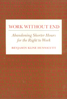

<body bgcolor="#FFFFFF" text="#000000" link="#0000FF" vlink="#CC0000" alink="#CC0000"><center><hr width="350" size="1" align="center" noshade>Tracing the political, intellectual, and social dialogues that changed the American concept of progress in terms of labor<hr width="350" size="1" align="center" noshade><p><a href="https://cdcshoppingcart.uchicago.edu/Cart/ChicagoBook.aspx?ISBN=9780877225201&&PRESS=temple" target="_top">Buy this book!</a> | <a href="https://cdcshoppingcart.uchicago.edu/Cart/Cart.aspx?PRESS=temple" target="_top">View Cart</a> | <a href="https://cdcshoppingcart.uchicago.edu/Cart/Cart.aspx?PRESS=temple" target="_top">Check Out</a></p><p></p></center><!--none//--><h1>Work Without End</h1>
<H2>Abandoning Shorter Hours for the Right to Work</H2>
<h3>Benjamin Kline Hunnicutt</h3>
<P>cloth 0-87722-520-6 $69.50, Apr 88, <FONT COLOR=#990033>Out of Stock Unavailable</FONT>
<br>paper 0-87722-763-2 $27.95, Aug 90, <FONT COLOR=#990033>Available</FONT>
<br>Electronic Book 1-43990-699-8 $27.95 <FONT COLOR=#990033>Out of Stock Unavailable</FONT>
<BR> 416 pp
140&nbsp;tables 14&nbsp;figures
</P><BLOCKQUOTE><I>"An extraordinarily informative scholarly history of the debate over working hours from 1920 to 1940."</I>
<br>&#151<b><I>New York Times Book Review</I></b><I></I></BLOCKQUOTE>
<p>For more than a century preceding the Great Depression, work hours were steadily reduced. Intellectuals, labor leaders, politicians, and workers saw this reduction in work as authentic progress and the resulting increase in leisure time as a cultural advance. Benjamin Hunnicutt examines the period from 1920 to 1940 during which the shorter hour movement ended and the drive for economic expansion through increased work took over. He traces the political, intellectual, and social dialogues that changed the American concept of progress from dreams of more leisure in which to pursue the higher things in life to an obsession with the importance of work and wage-earning.
<p>During the 1920s with the development of advertising, the "gospel of consumption" began to replace the goal of leisure time with a list of things to buy. Business, which increasingly viewed shorter hours as a threat to economic growth, persuaded the worker that more work brought more tangible rewards. The Great Depression shook the newly proclaimed gospel as well as everyone’s faith in progress.
<p>Although work-sharing became a temporary solution to the shortage of jobs and massive unemployment, when faced with legislation that would limit the work week to thirty hours, Roosevelt and his New Deal advisors adopted the gospel of consumption’s tests for progress and created more work by government action. The New Deal campaigned for the right to work a full time job&#151and won.
<BR>&nbsp;<h2>Reviews</h2>
<p><I>"</I>Work Without End<I> presents a compelling history of the rise and fall of the 40-hour work week, explains bow Americans became trapped in a prison of work that allows little room for family, bobbies or civic participation and suggests bow they can free themselves from relentless overwork. [This book] is a sober reconsideration of a topic that is critical to America’s future. It suggests that progress doesn’t mean much if there is not time for love as well as work, and liberation is an empty achievement if the work it frees one to do is truly without end."</I>
<br>&#151<b><I>The Washington Post</I></b>
<p><I>"Hunnicutt, with this excellent book, becomes the first United States historian to examine fully why this momentous change occurred."</I>
<br>&#151<b><I>The Journal of American History</I></b>
<p><I>"Hunnicutt’s achievement is to ask the questions, and to provide the first extended answer which takes in the full array of economic, social, and political forces behind the ‘end of shorter hours’ in the crucial first half of the twentieth century."</I>
<br>&#151<b><I>Journal of Economic History</I></b>
<p><I>"This thoroughly documented history [is] a valuable book well worth reading."</I>
<br>&#151<b><I>Libertarian Labor Review</I></b>
<p><I>"This is an important book in the emerging debate about alternatives to full employment. Hunnicutt is a skilled historian who is on to an important issue, writes well, and can bring many different kinds of historical sources to bear on the problem."</I>
<br>&#151<b>Fred Block</b>, University of Pennsylvania
<p><I>"</I>Work Without End</I> is a disturbing but impressive indictment of both big business and the New Deal program of Franklin D. Roosevelt.... Hunnicutt presents an unusual but persuasive description of a successful conspiracy to deprive American workers of their vision of a shorter-hours work week and the individual and societal liberation which would flow from it."</I>
<br>&#151<b><I>Labor Studies Journal</I></b>
<BR>&nbsp;<h2>Contents</h2><P>
<p>Acknowledgments
<br>Introduction
<br>1. The Century of Shorter Hours and Work Reduction
<br>2. The New Economic Gospel of Consumption
<br>3. Leisure for Labor
<br>4. Leisure for Culture and Progress
<br>5. Shorter Hours in the Early Depression
<br>6. FDR Counters Shorter Hours
<br>7. Idleness Reemployed: Public Works and Deficit Spending
<br>8. Social Security and the Fair Labor Standards Act
<br>9. Intellectuals and Reformers Abandon Shorter Hours
<br>10. A Case in Point: Scientists
<br>11. The Age of Work
<br>Notes
<br>Index
</P><BR>&nbsp;<H2>About the Author(s)</H2>
<P><b>Benjamin Kline Hunnicutt</b> is Professor of Leisure Studies at the University of Iowa.</P>
<BR><H2>Subject Categories</H2>
<p><A HREF="/tempress/american.html" TARGET="_top">American Studies</a>
<BR><A HREF="/tempress/labor.html" TARGET="_top">Labor Studies and Work</a>
</p>
<BR><h2 class="inpageheading">In the series</H2>
<P><I><a href="http://www.temple.edu/tempress/labor_change.html" onMouseOver="window.status='Click for other books in this series!'; return true;" onMouseOut="window.status=''; return true;" target="_top">Labor and Social Change</a></i>, edited by Paula Rayman and Carmen Sirianni.
</p><p><i>Labor and Social Change</i>, edited by Paula Rayman and Carmen Sirianni, includes books on workplace issues like worker participation, quality of work life, shorter hours, technological change, and productivity, as well as union and community organizing and ethnographies of particular occupations.</p>
<p align="center"><a href="https://cdcshoppingcart.uchicago.edu/Cart/ChicagoBook.aspx?ISBN=9780877225201&&PRESS=temple" target="_top">Buy this book!</a> | <a href="https://cdcshoppingcart.uchicago.edu/Cart/Cart.aspx?PRESS=temple" target="_top">View Cart</a> | <a href="https://cdcshoppingcart.uchicago.edu/Cart/Cart.aspx?PRESS=temple" target="_top">Check Out</a></p><p><font face="Arial" size="1"><a href="copyright.html" onMouseOver="window.status='Web Copyright Policy';return true;" onMouseOut="window.status=''" title="Web Copyright Policy">&copy;</a> 2015 <a href="http://www.temple.edu" target="new" onMouseOver="window.status='Link to Temple University home page';return true;" onMouseOut="window.status=''" title="Link to Temple University home page">Temple University</a>. All Rights Reserved. http://www.temple.edu/tempress/titles/460_reg.html</font></p>